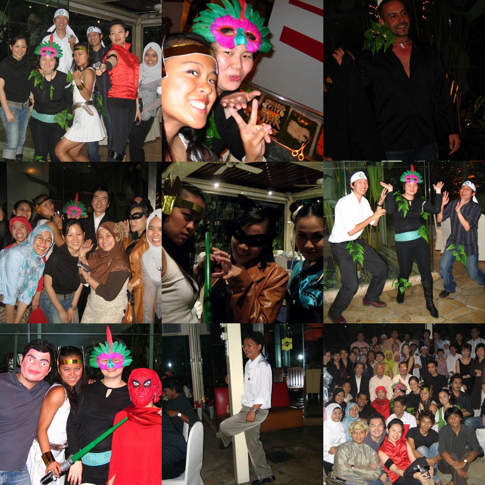

Hi!
It’s been a really strange month since I started work at my old company…obviously things have changed – like people going home before midnight (wimps! hehe) and a healthier regime of after-work yoga lessons, weekend paintball sessions, wall-climbing, waterfall excursion…
Could this really be the same place? Is it possible that KL is having a fresh turnaround of conventional (sweat factory) work-play schedules? Of course not, I started clocking up 10pm, midnight & 4am working nights in the last 2 weeks 
However, it was good while it lasted.
So here’s the pics of the highlights.
Waterfalling was good, drove 2 hours from KL, get off highway for another 45 mins, then offroad (and I mean offroad!) for another 30mins. Walk on path for 5 mins, then scramble through rainforest for 30mins to get to pristine tropical paradise! We got the first pool and it was great to get wet after working up a sweat. Splashed around then continued climbing. We only got through 7 of the 35 falls but the last falls was really beautiful. Jin got washed down 2 of the falls & almost went down the 3 rd and that would have been when we would have to trek all the way down to retrieve his body…but Hugh & Dave got to him in time 
Company dinner was fun too – the theme was superheros and it was at the Shangri-la restaurant. There was She-ra, Lara Croft Buffet Raider, Poison Ivy, Spider-woman, Catwoman, Chun Li (streetfighter), the Recycling Revolutionaries (aka Poison Ivy’s Ribenaberries), Mr. Bean…obviously a majority of the people didn’t dress up, but they made up for it with poledancing, man-whoring (just Dean  ) The food was good – sushi, oysters, entrees (in little shot glasses), choc fountain etc And our 3d guys are genius impersonators – I must watch myself around those fellas : )
) The food was good – sushi, oysters, entrees (in little shot glasses), choc fountain etc And our 3d guys are genius impersonators – I must watch myself around those fellas : )
I’ve been having a lot of fun this past month… oh yeah and uhmm there was this small incident where I sort of broke my finger before xmas & I didn’t know (yes, my doctors asked me how could you not know?) After my finger was swollen for a month I went to do xrays & now my finger is in this aluminium-sponge-brace thingy… So I’ve found out that wall-climbing with 3 fingers is not easy, my pen keeps getting stuck in my brace and I now do everything left-handed.
Sigh. Xrays this week and my finger’s better than before but still not back to normal (at all). Chinese New Year next week & I’m already eating myself silly with mandarin oranges.. so…
GONG XI FA CAI WAN SI RU YI !!
 from sunny warm msia
from sunny warm msia
Shi
ps: Waves are flat in msia! I’m hoping for one last swell this season…
pps: Does anyone want to go to the KL Muse concert?